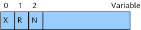

Before configuring IS-IS extended prefix advertisement, you have completed the following task:
IS-IS defines a type of extended prefix attribute (IPv4/IPv6 Extended Reachability Attribute) sub-TLVs. These sub-TLVs are used to describe the origin of advertised routes and can be advertised in IPv4, IPv6, and locator TLVs. Based on the advertised sub-TLVs, the device can determine whether the received routes are inter-domain routes or host routes.
The extended prefix attribute flag (IPv4/IPv6 Extended Reachability Attribute Flags) is a part of the extended prefix attribute sub-TLV. The specific composition is as follows:

Table 1 describes the fields of the extended prefix attribute flag.
Field |
Length |
Description |
|---|---|---|
X |
1 bit |
External prefix flag:
|
R |
1 bit |
Re-advertisement flag:
|
N |
1 bit |
Node flag:
|
You can determine whether to configure a device to advertise the extended prefix attribute flag.
system-view
isis [ process-id ] [ vpn-instance vpn-instance-name ]
advertise prefix-attributes flags
ipv6 advertise prefix-attributes flags
By default, an IS-IS process does not advertise the extended prefix attribute flag.
quit
By default, if a loopback interface's route with a 32-bit or 128-bit subnet mask is a host route, the extended prefix N flag is set to 1. To set the extended prefix N flag to 0, perform this step.
interface Loopback interface-number
undo portswitch
Determine whether to perform this step based on the current interface working mode.
isis prefix-attributes node-disable
isis ipv6 prefix-attributes node-disable
quit